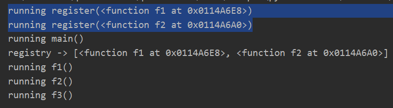

11 Python函数装饰器基础知识¶

函数装饰器是Python语言最优秀的设计之一，它以非常简洁的方式增强了函数的行为，让崎岖不平之路变得平坦顺畅。
函数装饰器是什么¶
函数装饰器是一个可调用对象，它的参数是另外一个函数。比如：
@decorate
def target():
print("running target()")
跟下面代码效果是一样的：
def target():
print("running target()")
target = decorate(target)
简单实现@decorate:
def decorate(func):
def inner():
print("running inner()")
return inner
测试一下：
>>> target()
running inner()
>>> target
<function decorate.<locals>.inner at 0x04899D18>
新的target是decorate(target)返回的inner函数。
因为装饰器只是代码优化的一种手段，不像if语句for语句那样，决定了程序流程，所以严格来说，装饰器只是语法糖。它有两个特性，一是能把被装饰的函数替换成其他函数，二是装饰器在加载模块时立即执行。
装饰器在导入时执行¶
若想真正理解装饰器，需要区分导入时和运行时。函数装饰器在导入模块时立即执行，而被装饰的函数只在明确调用时运行。
接下来通过示例对这个特性进行说明，新建registration.py模块：
registry = []
def register(func):
# 装饰器函数也可以不定义内部函数
print("running register(%s)" % func)
registry.append(func)
return func
@register
def f1():
print("running f1()")
@register
def f2():
print("running f2()")
def f3():
print("running f3()")
def main():
print("running main()")
print("registry ->", registry)
f1()
f2()
f3()
if __name__ == "__main__":
main()
从结果能看出来：

@register作用到f1和f2上，在导入时，在main()调用前就执行了。
f3没有装饰器，就没有在main()调用前执行@register。
在main()调用后，明确调用f1()、f2()、f3()才执行函数。
import模块能看得更明显：
>>> import registration
running register(<function f1 at 0x0189A730>)
running register(<function f2 at 0x0189A6E8>)
装饰器在导入时就执行了。
使用装饰器改进策略模式¶
在《Python设计模式知多少》文章中提到了装饰器可以更优雅的实现策略模式的最佳策略，它的实现代码如下：
promos = []
def promotion(promo_func):
promos.append(promo_func)
return promo_func
@promotion
def fidelity(order):
"""5% discount for customers with 1000 or more fidelity points"""
return order.total() * .05 if order.customer.fidelity >= 1000 else 0
@promotion
def bulk_item(order):
"""10% discount for each LineItem with 20 or more units"""
discount = 0
for item in order.cart:
if item.quantity >= 20:
discount += item.total() * .1
return discount
@promotion
def large_order(order):
"""7% discount for orders with 10 or more distinct items"""
distinct_items = {item.product for item in order.cart}
if len(distinct_items) >= 10:
return order.total() * .07
return 0
def best_promo(order):
"""Select best discount available
"""
return max(promo(order) for promo in promos)
它解决了“如果想要添加新的促销策略，那么要定义相应函数并添加到promos列表中”这个缺陷，并有更多优点：
新的促销策略，用@promotion装饰器即可添加。
促销策略函数不用以_promo结尾，可以任意命令。
促销策略可以在任意模块定义，只需要使用@promotion装饰器即可。
小结¶
本文首先介绍了函数装饰器是一个可调用对象，它的参数是另外一个函数。严格来说，它只是语法糖。要理解装饰器，需要区别导入时和运行时，装饰器在导入时就会执行。最后使用装饰器对策略模式的最佳策略进行了优化。为了进一步学习函数装饰器，得先明白另外一个很重要的概念：闭包。
参考资料：
《流畅的Python》